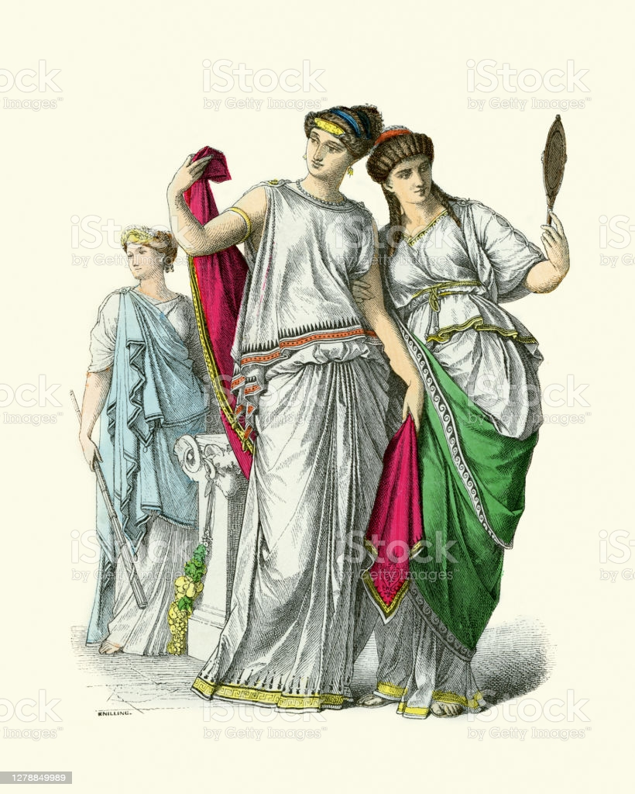
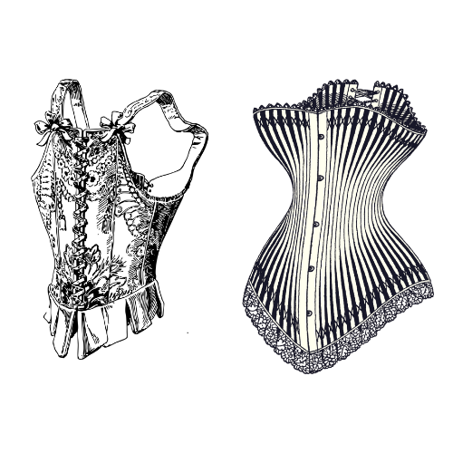

The beauty standards for women have always been on an interchanging cycle since the earliest days of humanity. The standard often differs due to the time period as well as the cultural region, therefore there is no definite example of what “true beauty” is, seeing as it differs from person to person. Regardless of there being no definitive answer, beauty standards have still found a way to make themselves prominent throughout the years and continue to impact society today. Let’s observe what some of these standards were throughout history.
Ancient Egypt idealized a woman who was slender, had narrow shoulders, a high waist, and symmetrical face. Ancient Egypt had generally sex-positive surroundings and women embraced their independence and beauty. Premarital sex was encouraged and divorce was not seen as a shameful thing.
Ancient Greece idealized plump, full-bodied, and light skinned women. During this time, the male form was heavily revered and women’s bodies were seen as disfigured versions of the male body. Due to the idolization of the male body, men were faced with higher beauty standards than women.
The Han Dynasty idealized women with slim waists, pale skin, large eyes, and small feet. Small feet were viewed as such an ideal aspect of Chinese beauty that women would often bind their feet from a young age in order to achieve this standard. This often resulted in disfigurations for the sake of beauty and the possibility of no longer being able to walk.

During the Italian Renaissance period, ample bosoms, rounded stomachs, full hips, and fair skin were revered. It was believed that it was a wife’s responsibility to reflect the status of her husband through behavior as well as physical appearance. A voluptuous body along with light hair and skin were seen as factors which demonstrated the ideal beauty.
Victorian England idealized women who were plump, full-figured, but still retained a cinched-waist. This was the era in which corsets became popularized. The 18th century corset was created to lift and shape the breasts, tighten the waist, and support the back to improve posture, ultimately creating a V shape from the upper torso. The corset was considered an undergarment and was rarely seen. A well-fitted corset was comfortable and did not restrict one’s breathing, however it did limit motion such as bending at the waist.
The Roaring Twenties idealized a flat chest, downplayed waist, short bob hairstyle, and boyish figure. Due to the changing cultural, political, and technological climate post World War I, women’s independence started to grow. Some of these changes included women entering the workforce, gaining the right to vote, and a wave of women’s rights to birth control. This was also the era in which the idea of the flapper became popularized. A flapper was identified as a young woman who was known to be energetic and free. They were seen as the first generation of independent American women who pushed economic, sexual, and political boundaries for women. Flappers were not a common occurrence of the twenties and were often looked down upon by society.


The Golden Age of Hollywood idealized curvy women with an hourglass figure, large breasts, and a slim waist. One of the most famous depictions of this ideal is Marilyn Monroe, an award winning American actress who was also a model and became a sex symbol. She was known to embrace the pin up style which also became popularized around this time.
The Sixties idealized willowy women who were thin, had long, slim legs, and an adolescent physique. During the 60’s, the young people of London began to rebel from their conservative culture. The embrace of experimental culture, which produced things such as the Rolling Stones, mods, Monty Python, and the first fashion models, was called “swinging.” Thus the phrase, “Swinging London” became known and the cultural phenomena gave influence to women’s fashion in America during the same era.
The Supermodel era of the 80s called for a woman who was athletic, slender but curvy, tall, and had toned arms. During this time, an exercise-craze became popular and people became obsessed with the idea of being thin and fit. This time period was subjected to a rise in anorexia and other body dysmorphia-related impacts.
Heroin Chic became popularized in the 90s which calls for a waifish woman who is extremely thin, has translucent skin, and is androgynous. Kate Moss, a supermodel and businesswoman, was the walking beauty ideal of this era. Moss’s collaboration with the brand Calvin Klein made her a fashion icon.
Today, the Postmodern Beauty era calls for a woman with a flat stomach, skinny yet fit and strong, large breasts and butt, and a thigh gap. The depiction of this standard is found in Kim Kardashian. It is desirable for women to be skinny yet curvaceous in ways that are not natural to many women. Therefore, there has been an increase in utilizing plastic surgery in order to attain the desired look.